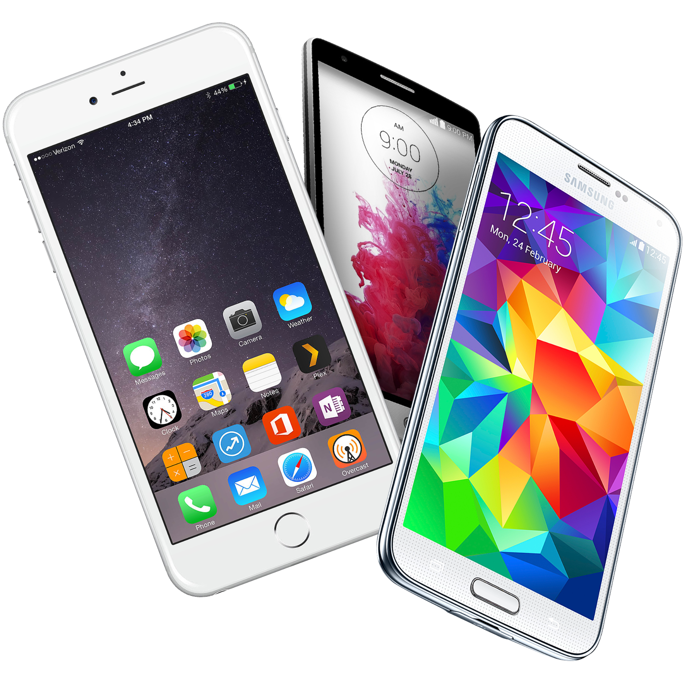
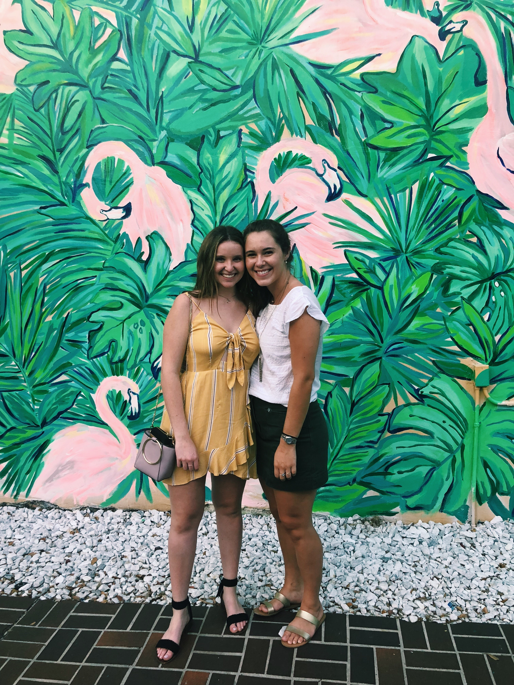

Screen Time and Students
Overview | Media | Author
About the Author
Caroline Tschida
Caroline Tschida is a sophomore at Florida State University, majoring in Information, Communications, & Technology. This site was created as an example for an assignment for my Web Development class. The references used for this site are listed below.

References
Title: "100 Things To Do During Screen Free Week"
- Author: Katy Wolk-Stanley
- Date: 2017
- https://www.huffpost.com/entry/100-things-to-do-during-s_b_5264727
Title: "Setting Limits on Screen Time: What Does Research Say?"
- Author: Saga Briggs
- Publication: InformED
- Date: 2017
- https://www.opencolleges.edu.au/informed/features/setting-limits-screen-time-research-say/
Title: "College Students In Study Spend 8 to 10 Hours Daily On Cell Phone"
- Author: Janice Wood
- Publication: PsychCentral
- Date: 2018
- https://psychcentral.com/news/2014/08/31/new-study-finds-cell-phone-addiction-increasingly-realistic-possibility/74312.html
Title: "Modern Technology and Sleep"
- Date: 2014
- https://shcs.ucdavis.edu/blog/archive/healthy-habits/modern-technology-and-sleep
Title: "Gray Matters: Too Much Screen Time Damages the Brain
- Author: Victoria L. Dunckley
- Date: 2014
- https://www.psychologytoday.com/us/blog/mental-wealth/201402/gray-matters-too-much-screen-time-damages-the-brain
 Caroline Tschida
Caroline Tschida